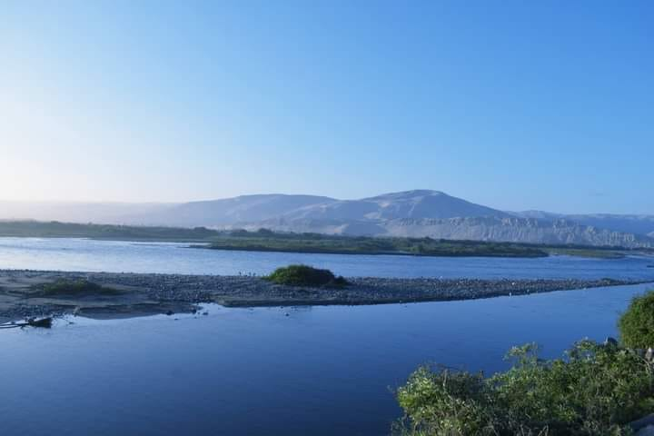

Camaná
Descubre la belleza de Camaná, capital del camarón
Camaná
Camaná es una de las localidades ribereñas que más se distingue de la zona sur del Perú, acreditada por sus bellas playas. Es un lugar encantador, principalmente entre los meses diciembre y marzo, ya que cuentan con olas que son excelentes para pugnar el calor y disfrutar del pescado más placentero del océano Pacífico.
Datos
Pais:
Departamento:
Arequipa
Actual Alcalde:
Marcelo Alejandro Valdivia Bravo
Fundación:
09 de noviembre de 1539
Galería
Plaza de Armas, Boulevard y mercado de Camaná
Como en cualquier ciudad, no puedes dejar de ver su plaza de armas. Aquí podrás apreciar a la gente en su día a día y comprender parte de su cultura. Tómate un descanso en alguna de sus bancas mientras disfrutas de una sabrosa cremolada. Luego, debes visitar el Boulevard de Camaná, un espacio muy concurrido por los camaneños y turistas. Aquí podrás observar a la estatua de camarón de Camaná. Aprovecha para tomarte una fotografía con este símbolo de la ciudad y provincia. También te recomendamos visitar su mercado donde podrás probar platos exquisitos así como observar el trabajo de su población. Detente unos minutos a mirar los productos nativos que poseen y anímate a probarlos.
Catedral de San Miguel
Como en cualquier ciudad, no puedes dejar de ver su plaza de armas. Aquí podrás apreciar a la gente en su día a día y comprender parte de su cultura. Tómate un descanso en alguna de sus bancas mientras disfrutas de una sabrosa cremolada. Luego, debes visitar el Boulevard de Camaná, un espacio muy concurrido por los camaneños y turistas. Aquí podrás observar a la estatua de camarón de Camaná. Aprovecha para tomarte una fotografía con este símbolo de la ciudad y provincia. También te recomendamos visitar su mercado donde podrás probar platos exquisitos así como observar el trabajo de su población. Detente unos minutos a mirar los productos nativos que poseen y anímate a probarlos. ¡Sus precios son muy accesibles!
Playas
Camaná destaca por sus hermosas playas como la Punta, Cerrillos, el Chorro, las Cuevas, Quilca, la Miel, Arantas, Honoratos, la Playuela, entre otras. Estas son visitadas por aficionados a la pesca y por quienes practican deportes de aventura
Otros Actractivos turisticos
Al ser una de las ocho provincias que conforman el departamento de Arequipa, posee muchos atractivos ademas de los antes mencionados. Te presentamos otros lugares turisticos para que visites la proxima vez que vengas.

Más Lugares a visitar
Caleta de Quilca
- La caleta de Quilca es uno de los más antiguos de Perú hecha en la época colonial.
- Era una lugar donde asaltaban los piratas, fue uno de los puertos más importantes del Perú pero cuando los chilenos se supieron de que el Almirante Miguel Grau Seminario; héroe de la Guerra del Pacífico, se hospedara allí después de la batalla de Iquique; los chilenos enfurecidos destruyeron el puerto que dejó a la caleta Quilca en ruinas pero posteriormente, después de mucho trabajo se pudo reconstruir.
- Es el tercer puerto en importancia de Arequipa.
Cerro Mil Hojas
- Se le puso ese nombre porque la arena pigmentada por la erosión hace posible este fenómeno.
- Pasando por el cerro se puede apreciar un cementerio nativo de la época pre-inca; se cree que perteneció a los Tiahunacos o Changos
- Es el lugar perfecto para ver los hermosos valles de Camaná.
Petroglifos de Quilca
- Los petroglifos de Quilca son dibujos grabados en rocas y piedras grandes donde se puede ver dibujos de animales zoomorfos y antropomorfos como pescado, ballena, llama, etc.
- Se cree que fue hecho por antiguos pescadores de la época Pre-inca.

Mirador del Inca
- Se puede apreciar la hermosa y bonita vista del litoral camanejo.
Pucchun
- Pucchun es un centro poblado de Mariscal Cáceres
- Existe la famosa laguna de pucchun que es la más extensa de la región y donde abundan gran variedad de aves silvestres y también serve de refugios alas aves que constantemente emigraba
- Pucchun tiene unas playas bonitas y extensas donde se puede apreciar el bivalvo llamado Macha

El Chiflón
- La desembocadura del río es conocida como "Chiflón", el cual es poco conocido y muy pocos también saben apreciar el fenómeno natural
- río nace en las alturas del Sabancaya y en su recorrido riega tierras de las provincias de Caylloma, Castilla y Camaná, luego toma el nombre de Colca, donde se encuentra el famoso Cañón del Colca, luego majes al pasar por el conocido valle y posteriormente Camaná al llegar a estas tierras.